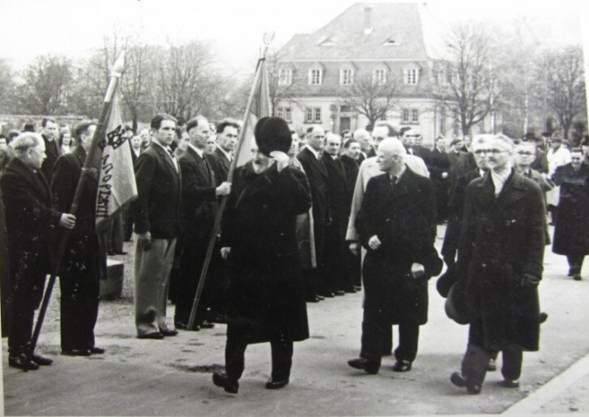
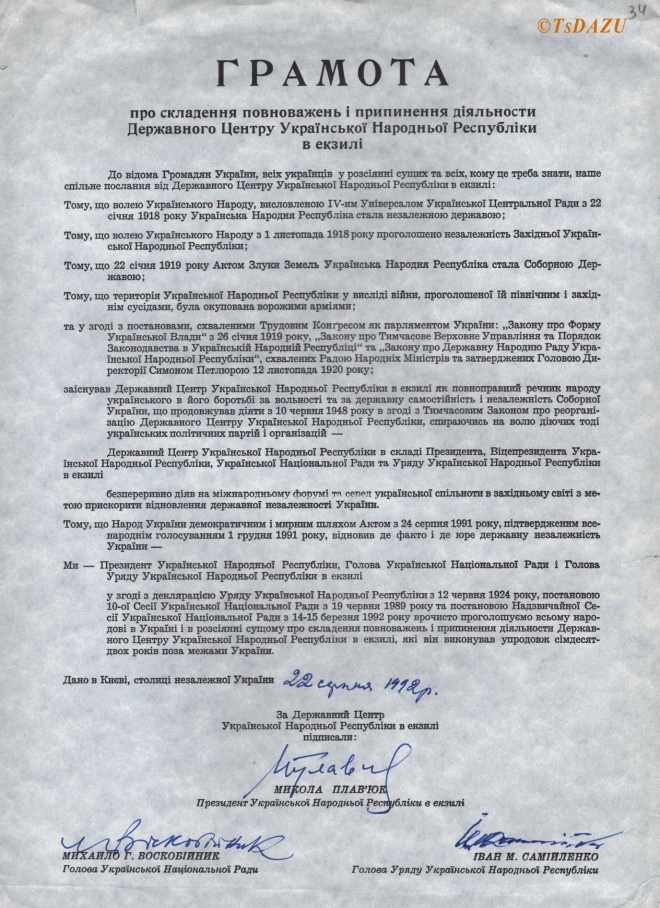
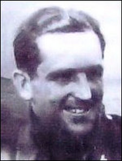
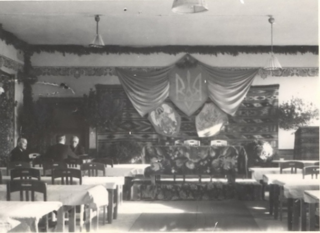
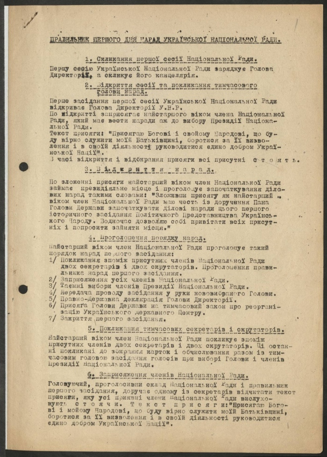
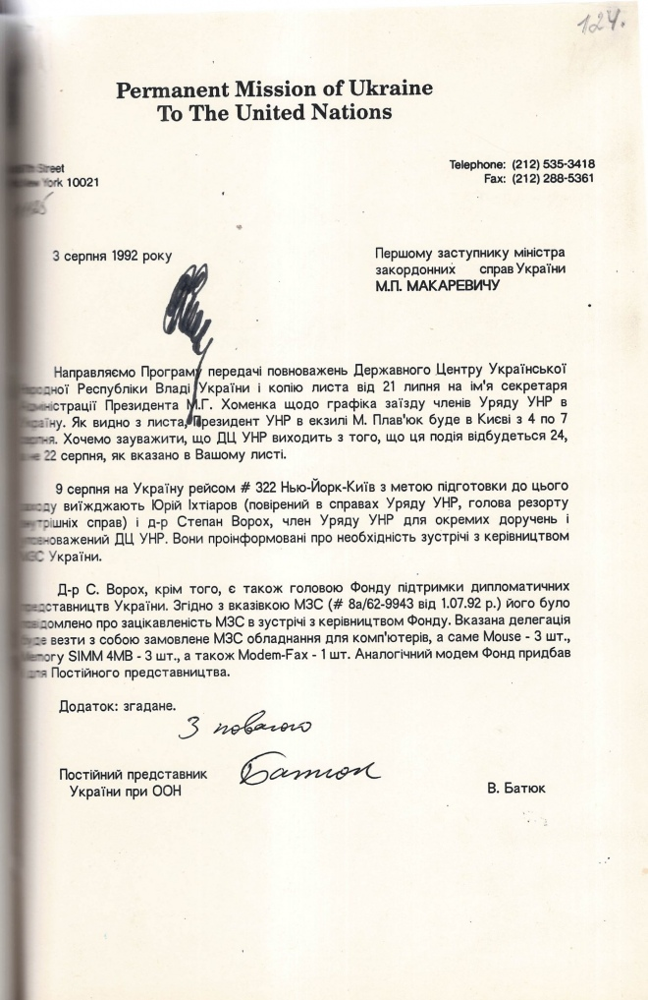
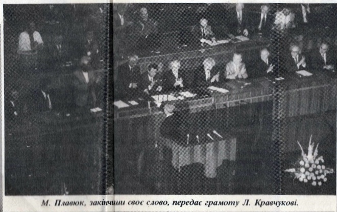
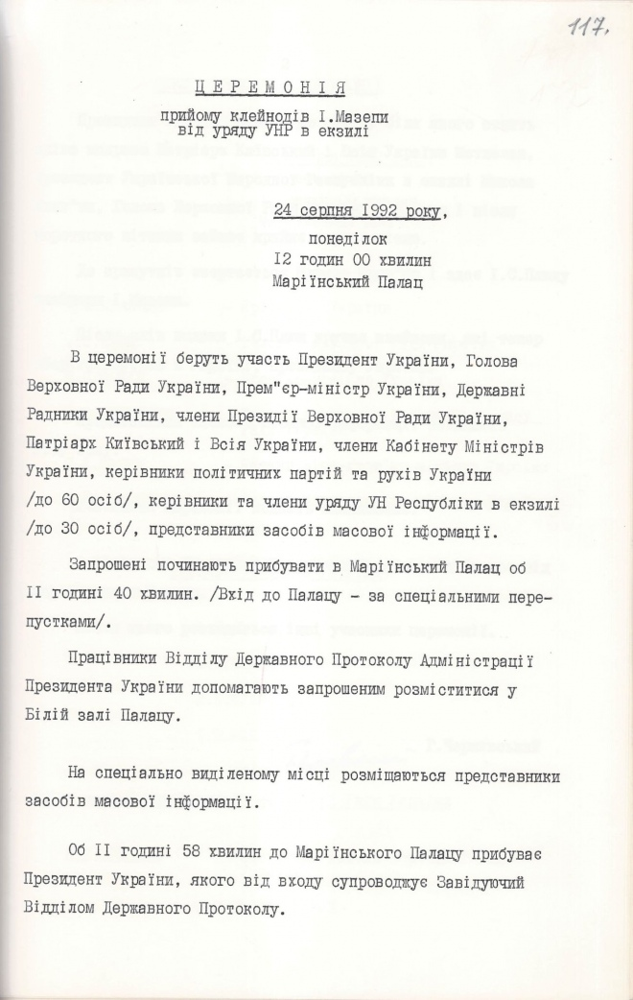

Роздуми про Уряд УНР в екзилі
У нашій уяві закріпилося поняття того, що УНР припинила своє існування десь на початку 1920-х. Усі політичні, державні й військові діячі, а також Армія УНР десь ніби розчинилися за кордоном, виїхавши на еміграцію. В Україні запанували більшовики й державотворча традиція була перервана. Феномен існування уряду Української Народної Республіки в екзилі (на еміграції) взагалі не усвідомлений пересічними колами українців. Але саме Уряд УНР в екзилі зберігав тяглість української державності. Підтвердженням цього є його архівні документи, які із здобуттям незалежності були передані незалежній Україні

Виступ Миколи Плав’юка на сесії Верховної Ради України з нагоди складання повноважень ДЦ УНР в екзилі
Традиції державотворення українського народу вже понад тисячоліття. Історики лічать етапи державотворення від початку писаних джерел: Давня Русь, Галицько-Волинська держава, Литовсько-Руська держава. У 1648 році з'явилася козацька держава - Україна-Гетьманщина - зі столицею спершу в Чигирині, потім у Батурині й у Глухові, що існувала трохи більше, ніж до середини XVIII ст.
Перебуваючи у складі Російської та Австрійської імперій, українці боролися за возз'єднання й відновлення державності. Хоча для світової історії цей період - лише мить, але людські життя, втрачені у боротьбі з сильнішими "сусідами", не повернути.
Четвертим Універсалом 9(22) січня 1918 року Українська Центральна Рада проголосила незалежність Української Народної Республіки (УНР) від Росії. 19 жовтня 1918 року на українських етнічних землях, що перебували в складі Австро-Угорщини, була проголошена Західноукраїнська Народна Республіка (ЗУНР).
22 січня 1919 року УНР та ЗУНР урочисто оголосили про об'єднання у соборну державу - єдину Україну. Проте для здобуття реальної соборності і незалежності держави український народ ще мав боротися не одне десятиліття. Невдовзі уряди ЗУНР і УНР опинилися на еміграції. Екзильний уряд ЗУНР припинив існування 15 березня 1923 року.
У нашій уяві закріпилося поняття того, що Директорія УНР як найвищий орган державної влади УНР діяла лише від 14 листопада 1918 року до 10 листопада 1920 року, і її правління після кількох Державних нарад, остання з яких відбулася 8 листопада 1920 року у селі Ялтушків на Вінниччині, припинилося.
Усі політичні, державні й військові діячі, а також Армія УНР десь ніби розчинилися за кордоном, виїхавши на еміграцію. В Україні запанували більшовики й державотворча традиція була перервана. А про радянський період державотворення й згадувати не варто.
Феномен існування уряду Української Народної Республіки в екзилі (на еміграції) взагалі не усвідомлений пересічними колами українців. Але саме Уряд УНР в екзилі зберігав державотворчі традиції українського народу. Підтвердженням цього є його архівні документи, які, разом із символами державності УНР, із здобуттям незалежності були передані незалежній Україні. Передавання архівів і передавання символів є відтинками одного й того ж явища - тривалості традиції державотворення.
Факт недостатньої уваги до історії Уряду УНР в екзилі відзначав Дмитро Решетченко у статті "Державний центр Української Народної Республіки в екзилі: передумови реорганізації (1945-1948 рр.)", опублікованій 2018 р. у третьому числі "Українського історичного журналу". Глибше зануритися в тему вченому завадила професійна належність до Центрального державного архіву зарубіжної україніки (ЦДАЗУ).
Дмитро Решетченко наполягав, що саме завдяки введенню до наукового обігу документів архівного фонду ЦДАЗУ № 35 "Державний центр Української Народної Республіки в екзилі" з'явилася можливість дослідити процеси, які призвели до відновлення Державного центру УНР в екзилі 1948 року. Якби не архівний патріотизм дослідник вивчив би основний корпус документів уряду УНР в екзилі, що зберігається в Центральному державному архіві вищих органів влади та управління України (ЦДАВО України).
А втім, не можливо не погодитися із ним стосовно того, що фонд ЦДАЗУ № 35, який складається з 89 справ і охоплює період 1952-2006 років містить цінні історичні документи. Вони надійшли на зберігання до ЦДАЗУ в листопаді 2010 року та лютому 2012 року.
Це - протоколи першої сесії Ради УНР, правильник УНР, списки, плани, звіти про діяльність уряду УНР, резолюції, протоколи, листування, документи культурно-освітньої та наукової діяльності центру, фотодокументи тощо. Важливо те, що саме у фонді ЦДАЗУ № 35 зберігається "Грамота про складання повноважень і припинення діяльності Державного центру УНР в екзилі" від 22 серпня 1992 року.
Грамота про складення повноважень і припинення діяльності Державного центру УНР в екзилі ЦДАЗУ, ф. 35, оп. 1, спр. 70, арк. 34
Архівний фонд Уряду УНР в екзилі, що зберігається в ЦДАВО України, - фонд № 5235 "Уряд Української Народної Республіки в екзилі" - містить 2198 архівних справ за 1920-1991 роки. Дослідниця Марія Кулініч вказує, що "основний масив документів про діяльність Уряду УНР в екзилі надійшов на зберігання до ЦДАВО України у 2000 та 2004 рр.".
Питання про передавання Архіву УНР з Національного архіву Канади до України було порушене ще у 1992 році, а надійшов він до ЦДАВО України у 1996 році. У листі начальника Головного архівного управління при Кабінеті Міністрів України Бориса Іваненка до Прем'єр-Міністра України Вітольда Фокіна від 3 березня 1992 року читаємо:
"Шановний Вітольде Павловичу!
Звертаємось до Вас з проханням сприяти поверненню на Україну архіву Української Народної Республіки. Як повідомив Президент УНР в екзилі М. Плав'юк під час перебування в Головархіві України, цей архів знаходиться дотепер на депозитному зберіганні в Державному архіві Канади на умовах його передачі Україні, якщо вона стане самостійною незалежною державою. Пан президент висловив свою згоду всіляко сприяти цьому.
Головархів зі свого боку має велику зацікавленість у згаданому архіві - складовій частині фонду УНР, що зберігається в Центральному державному архіві вищих органів державної влади і державного управління України, і становить незаперечну цінність для української історичної науки.
У зв'язку з цим просимо офіційно звернутись до президента Плав'юка з проханням щодо передачі незалежній Україні архіву УНР.
Офіційна передача, за погодженням з М. Плав'юком може відбутись під час Всесвітнього конгресу українців, що проходитиме в серпні 1992 року.
У свою чергу Прем'єр-Міністр України Вітольд Фокін 27 квітня 1992 року написав Президенту УНР в екзилі Миколі Плав'юку:
"Шановний пане Президенте!
Під час перебування у Києві Вами висловлювалася думка про передачу незалежній Україні архіву колишньої Української Народної Республіки. У даний час зазначений архів перебуває на депозиті в Державному архіві Канади.
Маючи на меті зміцнити документально-джерельну базу України, без якої жодна країна не може вважати себе повноцінною державою, а також у зв'язку з нагальною потребою в написанні об'єктивної історії Української держави ми сподіваємося, що Ви всіляко сприятимете у вирішенні цієї важливої справи.
У разі Вашої згоди офіційна передача архіву може відбутись у Києві під час Всесвітнього конгресу українців у серпні 1992 року.
З повагою Вітольд Фокін".
Проте, мало минути ще майже чотири роки, щоб Архів уряду УНР надійшов до України. Фактично, від переїзду на еміграцію документи Уряду УНР, а також пов'язаних із ним установ, відкладалися в його архіві, але за період з 1921 року й до кінця Другої світової війни, документи мало збереглися: "значна їх кількість була знищена під час війни, частину ж, що перебувала в Парижі, захопили німці, і вона просто зникла".
"Після закінчення Другої світової війни Державний центр УНР в екзилі під проводом президента Андрія Лівицького мав осідок у Мюнхені, де й почав заново створювати його архів. У 70-х роках діяльність президента та уряду УНР в екзилі було перенесено на північноамериканський континент, що, у свою чергу, спричинило виникнення питання про переміщення архіву.
Оскільки його перевезення й розміщення вимагало значних коштів, тогочасний президент УНР Микола Лівицький звернувся до урядів кількох держав північноамериканського континенту щодо можливості розміщення архіву в їх національних архівосховищах.
Лише уряд Канади відгукнувся на це звернення, виділив кошти на перевезення архіву і прийняв його на депозитне зберігання до Національного архіву, розташованого в Оттаві. Головною умовою угоди, укладеної між Архівним комітетом УНР та Національним архівістом Канади, була можливість передачі архіву в Україну тоді, коли вона стане дійсно незалежною і суверенною державою".
Минуло ще два роки листування між Президентом УНР Миколою Плав'юком, Національним архівом Канади, Архівним комітетом Державного центру УНР в екзилі, щоб усі умови врешті були виконані. За ці роки пішли з життя голова Архівного комітету УНР Юрій Сальський, член цього комітету, Президент Української вільної академії наук (1955-1969 рр.), голова Уряду УНР в екзилі у 1980-1989 рр., професор Ярослав Рудницький.
Голова Архівного комітету УНР (1980-1992) Юрій Сальський
Передаванню архіву з Канади до України сприяли Міністерство закордонних справ Канади, Надзвичайний і Повноважний посол Канади в Україні Крістофер Вестдал, працівники посольства Роман Ващук та Інна Царькова.
У Національному архіві Канади перед передаванням архів був упорядкований (щоправда, за канадськими архівними правилами) і мікрофільмований. З канадських архівістів, які справили свій внесок у збереження й передавання архіву, слід назвати Національного архівіста Канади Жан-П'єра Валло, його заступника Мішеля Свіфта і провідного фахівця архіву Мирона Момрика.
На зібранні з приводу передавання архіву до ЦДАВО України були присутні науковці, архівісти, представники Адміністрації Президента України, Верховної Ради України, української діаспори.
Величезну значущість цього архіву для історичної науки у своїх виступах підкреслили Віце-прем'єр-міністр України академік Іван Курас, вже колишній Президент УНР в екзилі Микола Плав'юк, Посол Канади в Україні Крістофер Вестдал, Голова Національної комісії з питань повернення в Україну культурних цінностей Олександр Федорук, директор Інституту української археографії та джерелознавства ім. М. С. Грушевського Павло Сохань.
У виступах підкреслювалося: "Документи, що надійшли з Канади, стануть суттєвим доповненням так званих "празьких фондів" ЦДАВО України (242 фонди), що висвітлюють життя і діяльність української еміграції в роках 1921-1939. А повоєнний період діяльності демократичної еміграції відбито в документах Архіву УНР в екзилі.
Частково вони й перекриваються, доповнюючи один одного, оскільки складовою частиною останнього архіву є документи приватних збірок та листування А. Лівицького, П. Лимаренка, С. Барана, С. Довгаля, С. Витвицького, В. Жили, В. Філоновича, М. Крата, що відбивають події з початку ХХ ст. Усі згадані матеріали є безцінним джерелом для дослідження відтинку української історії, практично незнаного в Україні".
Після прийняття до ЦДАВО України Архіву УНР в екзилі знову почалося його впорядкування й описування, але вже за правилами, прийнятими в Україні. Це упорядкування тривало аж до 2004 року, коли 12 березня у читальному залі ЦДАВО України відбулася презентація архівного фонду № 5235 "Уряд Української Народної Республіки в екзилі".
Зала засідань Української Національної Ради, Торонто, Канада Архів ОУН в УІС - Лондон, Ф.30, оп.3, од.зб.58, од.обл.2
Фонд містить декрети президента УНР; постанови, протоколи засідань, протоколи сесій, звіти Української Національної Ради; документи про партії, що діяли в цей час за кордоном; листування виконавчого органу УНР з президентом; проекти законів; документи (1949-1959) щодо вирішення питання про державний прапор і гімн УНР; документальні матеріали про діяльність Української автокефальної православної церкви, окремих міністерств; звернення, меморандуми до ООН і урядів США, Франції про роль і значення України як європейської держави, напрями української зовнішньої політики; листування з представниками української еміграції у різних країнах; документи про фінансову діяльність українського уряду в екзилі; газетні матеріали, у т. ч. вирізки газет "Свобода", "Гомін України" про становище в Україні, про життя і діяльність української еміграції за кордоном загалом.
У фонді відклалися документи Україно-канадського комітету, Панамериканської української конференції, Спілки українських демократичних партій, Українського національно-державного союзу та ін.
Принагідно нагадаємо, що в ЦДАВО України зберігається понад пів сотні різних інших фондів української еміграції - урядових, політичних, громадських, наукових, військових установ і частин, а також архівні фонди особового походження українських діячів на еміграції.
І саме у ЦДАВО України знайшли місце для зберігання документи органів влади і державних установ періоду Української Центральної Ради, Української Держави та Директорії. Відтак, сам ЦДАВО України, який іноді називають "Архів влади", є свідченням традиції державотворення, у його сховищах відчувається як одна влада змінювалася іншою, а традиція державотворення зберігалася.
Президент УНР в екзилі Микола Плав'юк, перебуваючи в архіві, неодноразово наголошував, що Уряд УНР в екзилі був таки вищим органом Української Народної Республіки, а, отже, іншого місця, ніж Центральний державний архів вищих органів влади та управління України, для зберігання його архіву він не бачив.
ЦДАВО України неодноразово звертався до минулих керівництв Укрдержархіву про передавання фондів профспілкових організацій радянського періоду, які, по суті, були громадськими об'єднаннями, до Центрального державного архіву громадських об'єднань України (ЦДАГО України).
Натомість архів просив передати до ЦДАВО України шматки фондів урядових установ на еміграції, що зберігалися у тепер приєднаному до ЦДАГО України ЦДАЗУ. Адже саме ЦДАВО України ще за радянського періоду, а тепер вже й за незалежної України, концентрує у себе фонди української діаспори з-за кордону.
Однак, повернемося до традиції державотворення й Директорії УНР, яка насправді не припинилася з виїздом в екзил, а, принаймні, умовно функціонувала аж до 10 червня 1948 року. Тобто, існуюча Директорія фактично зберігала ознаки самостійної й незалежної України.
Звідки виникає така ідея? Зі справи № 28 фонду № 5235 (опис № 1) ЦДАВО України. Читаємо в "Правильнику першого дня нарад Української Національної Ради (скликання першої сесії Національної Ради)":
"11. Заприсяження Голови Директорії як Голови Держави на тимчасовий закон про реорганізацію державного центру
По виголошенні правно-державної декларації всі присутні члени Національної Ради встають. Голова Національної Ради просить Голову Держави зайняти місце перед президіяльним столом. Коли це сталося, Голова Національної Ради звертається до Голови Директорії з такими словами "Пане Президенте, прошу Вас відчитати вголос отсі слова присяги (тут подає Голові Директорії текст):
"Присягаю Богові і мойому Народові, що віддам усі мої сили справі визволення і державної незалежності моєї Батьківщини. Для осягнення цієї мети не уступлю перед ніякою перешкодою чи небезпекою. Обіцяю шанувати встановлені закони Української Держави і зокрема поступати згідно з тимчасовим законом про реорганізацію Українського Державного Центру".
12. Закриття першого святочного засідання Національної Ради
По зложенні присяги Головою Держави, Голова Національної Ради закриває це перше святочне засідання короткою промовою.
13. Цей правильник для першого засідання Національної Ради набирає правосильності по затвердженні та підписанні його Головою Держави.
Правильник набрав правосильности дня 10 червня 1948 року, колито його затвердив і підписав Голова Держави".
Правильник першого дня нарад Української Національної Ради
Читаємо на аркуші 7 цієї ж справи:
"Тимчасовий закон про реорганізацію Українського Державного Центру.
-
Розділ перший.
Стаття 1. Органами державного центру Української Народної Республіки є: Українська Національна Рада, Голова Директорії, як Голова Держави з Титулом Президента і Уряд. -
Розділ другий.
Українська Національна Рада.- Стаття 2. Українська Національна Рада виконує функції тимчасового народнього законодавчого представництва аж до скликання на звільненій від окупації українській національно-державній території Установчих Зборів, вибраних на основі загального, рівного, безпосереднього, пропорційного і таємного голосування, які встановлять основний закон про устрій Української Держави.
- Стаття 3. Першу Сесію Національної Ради скликає і відкриває теперішній Голова Директорії Української Народної Республіки.
- Стаття 4. Українська Національна Рада:
- ухвалює закони і державний бюджет;
- розглядає звіти, заяви уряду і окремих його членів та уділює або відмовляє їм довір'я;
- ратифікує всі міжнародні договори, при чому договори без такої ратифікації є неважні;
- вибирає Найвищу Державну Контрольну Раду, встановлену окремим законом, на чолі з державним контрольором, якого затверджує Голова Держави на внесення Голови Національної Ради;
- вибирає Голову Державного Трибуналу, якого компетенцію і склад визначить окремий закон, при чім всіх членів Державного Трибуналу затверджує Голова Держави.
- Стаття 5.
- 1) Українська Національна Рада складається з представників існуючих українських політичних партій, що визнають незалежність та соборність української держави…".
Таким чином, після відбуття в екзил Директорія продовжувала працювати і останнім, хто ще іменувався Головою Директорії був Андрій Лівицький. Ну, а першим, звісно, Симон Петлюра.
Саме Андрій Лівицький реалізував реформу Державного центру УНР в екзилі і створив посаду Президента УНР. Він же й став першим Президентом УНР 10 червня 1948 року. Звертаємо увагу, що саме ця дата вказана в тексті "Правильника…". Після смерті Андрія Левицького Президентами УНР в екзилі були Степан Витвицький, Микола Лівицький і Микола Плав'юк.
У справі № 25 фонду № 5235 ЦДАВО України (опис 1) міститься "Лист Постійної місії України при ООН", у якому зазначено:
"Хочемо зауважити, що ДЦ УНР [Державний Центр УНР] виходить з того, що ця подія відбудеться 24, а не 22 серпня, як вказано в Вашому листі" (аркуш 124).
Власне наведений документ є супроводжувальним листом, із яким Першому заступнику Міністра закордонних справ України Миколі Макаревичу від Постійного представника України при ООН Віктора Батюка була надіслана "Програма передачі повноважень Державного центру Української Народної Республіки Владі України".
Супровідний лист з программою передачі повноважень Державного центру Української Народної Республіки Владі України, ЦДАВО України. Фонд 5235. Опис 1. Справа 25
Відтак дата передачі клейнодів гетьмана Івана Мазепи - знаку гідності Голови Української Держави, що був знаком влади Президентів УНР в екзилі - переносилася з 22 на 24 серпня 1992 року.
Президент УНР в екзилі Микола Плав'юк для передачі повноважень (клейнодів) мав прибути до Києва 4 серпня 1992 року разом із дружиною Ярославою. Але подружжя затримувалося і Плав'юк переносив прибуття на 7 серпня, бо планувало з Відня поїхати до Івано-Франківська, а потім до Косова.
15-17 серпня вони збиралися відвідати Тернопіль, і тільки 18-30 серпня вже бути в Києві, звідки відбути через Франкфурт до Торонто. Громадянином України останній Президент УНР в екзилі Микола Плав'юк став наступного, 1993, року. Чи говорить це все про те, що якби все сталося, як попередньо планувалося, то День Незалежності українці б святкували 22 серпня? Можливо!
Принагідно зауважимо, що через 30 років після передачі державних повноважень від Уряду УНР в екзилі Президентові незалежної Україні на вебсайті Світового конгресу українців 22 серпня 2022 року опубліковано замітку "30 років передачі державних повноважень від уряду УНР в екзилі", у якій написано:
"Урочиста церемонія передачі повноважень відбулась у Києві 22 серпня 1992 року, у присутності Президента, голови Верховної Ради і прем'єр-міністра України. Останній Президент в екзилі передав першому демократично обраному президенту незалежної України Леоніду Кравчуку (1934-2022) клейноди УНР і грамоту про правонаступництво.
Склавши повноваження, уряд УНР в екзилі виконав постанову парламенту УНР від 1919 року, яка була підписана головою Директорії УНР Симоном Петлюрою (1879-1926), де йшлося про припинення діяльності Уряду УНР в разі проголошення незалежності Української держави".
Так, передав, але не 22 серпня, а 24 серпня 1992 року. Ця плутанина із датою вже спростована авторами статті "Клейнод гетьмана Івана Мазепи" Геннадієм Боряком, Віктором Бузалом, Марією Дмитрієнко, Ніною Ковтанюк, Володимиром Репринцевим, опублікованою в журналі "Спеціальні історичні дисципліни" (2015 р., № 12):
"…Щоправда, передача повноважень президента УНР в екзилі першому всенародному обраному президентові незалежної України Л. М. Кравчуку планувалася ще 22 січня 1992 р., на відзначення 74-х роковин проголошення Четвертого Універсалу Центральної ради, за яким Україна була визнана самостійною державою.
Однак, після консультацій з правниками та державним керівництвом України було вирішено цю справу владнати за усіма конституційними нормами і офіційну церемонію передачі повноважень Державного центру УНР в екзилі Президенту України здійснити 24 серпня 1992 р.
Вручення Грамоти про передачу повноважень Державного центру УНР в екзилі владі України в Києві Миколою Плав'юком Леонідові Кравчукові газета Cвобода, 9 жовтня 1992 року
ІСТОРИЧНИЙ ЗВУКОЗАПИС: 24 серпня 1992 року Президент УНР і Голова ОУН Микола Плав'юк склав повноваження Державного Центру УНР на вигнанні Президентові України Леонідові Кравчуку..На підставі документальних фотографій нами встановлено, що востаннє клейнод гетьмана Мазепи на грудях президента УНР в екзилі Миколи Плав'юка було використано під час урочистого складення повноважень Державного Центру УНР в екзилі президентові і урядові незалежної Української держави 24 серпня 1992 р. в Маріїнському палаці…
У цей день Президент України Л. Кравчук прийняв у повному складі делегацію з сорока осіб ДЦ УНР у Маріїнському палаці. Під склепінням Білої зали палацу в урочистій обстановці Президентові України Л. Кравчуку і Прем'єр-міністрові України В. Фокіну передано Прапор ДЦ УНР, державну печатку, книжки та інші пам'ятні речі, які супроводжували функціонування уряду на закордоні.…"
До церемонії урочистої передачі повноважень клейноди гетьмана Івана Мазепи передостаннє були покладені на груди Президента Української Народної Республіки в екзилі 14 березня 1992 року Патріархом Мстиславом під час проведення Надзвичайної сесії Української Національної Ради 10-го скликання.
І ось 24 серпня 1992 року. Київ. Маріїнський палац. Церемонія прийому клейнодів І. Мазепи від уряду УНР в екзилі:
"Об 11 годині 58 хвилин до Маріїнського Палацу прибуває Президент України, якого від входу супроводжує Завідуючий відділом Державного Протоколу.
Президент України прямує до столу, біля якого стоять зліва направо Патріарх Київський і Всія України Мстислав, Президент Української Народної Республіки в екзилі Микола Плав'юк, Голова Верховної Ради України І. С. Плющ, і після короткого вітання займає крайнє справа місце.
До присутніх звертається Микола Плав'юк і здає І. С. Плющу клейноди І. Мазепи.
Після слів подяки І. С. Плющ вручає клейноди, які тепер зберігатимуться в Україні, Президенту України".
Опис церемонії передачі клейнодів І.Мазепи від уряду Української Народної Республіки (УНР) президенту України, ЦДАВО України. Фонд 5235. Опис 1. Справа 25
Все так чітко, навіть суворо, й урочисто… І тамуєш подих…
І потім історики напишуть про клейноди:
"Це один з тих не багатьох атрибутів Голови Української Народної Республіки, який дійшов до нашого часу і як символ спадковості державотворчих устремлінь був переданий президентові і урядові незалежної України під час складання повноважень Державного центру УНР у екзилі 24 серпня 1992 р.".
Символи Української Держави й архіви передані, державотворчу традицію дотримано, спадковість присутня…
Діяльність Уряду УНР в екзилі, який зберігав державотворчу традицію, символи державності України, що дійшли до наших днів не лише від Української Центральної Ради, Української Держави чи Директорії УНР.
А з давнини, ще від гетьмана Івана Мазепи може бути досить детально вивчена на підставі архівних фондів, що зберігаються в ЦДАВО України, насамперед на підставі архівного фонду № 5235.
Архівні документи цього фонду свідчать, що традиція української державності не переривалася навіть за радянського періоду й підтримувалася Урядом УНР в екзилі.
У цій історії з фондами і клейнодами дуже багато символізму. Навіть Патріарх Мстислав відіграв тут свою символічну роль, про яку ми не згадали.
Однак, державні символи й історичні документи ідентифікують кожну націю. І українську теж. Вони є доказом державності, а їх передача демонструє тяглість державотворчої традиції, яка в українців народилася ще понад тисячоліття тому.